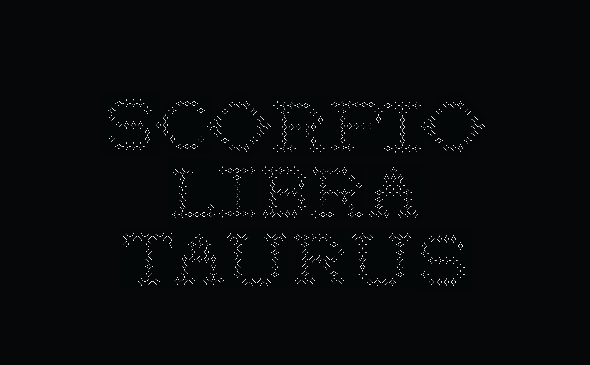
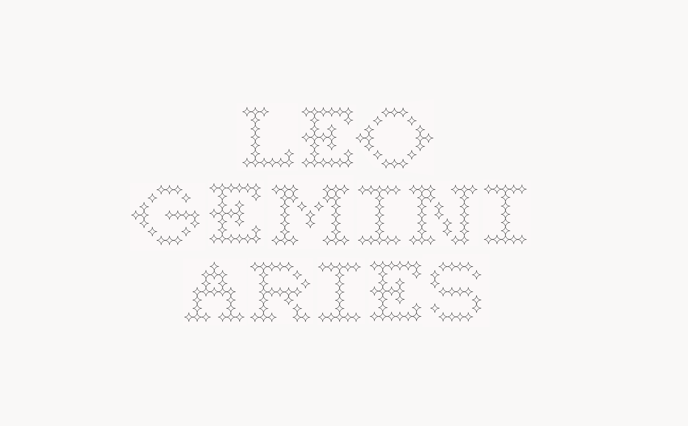
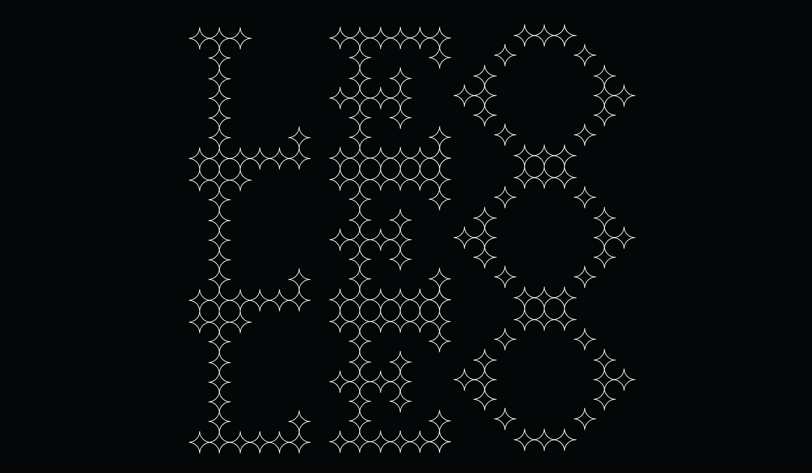
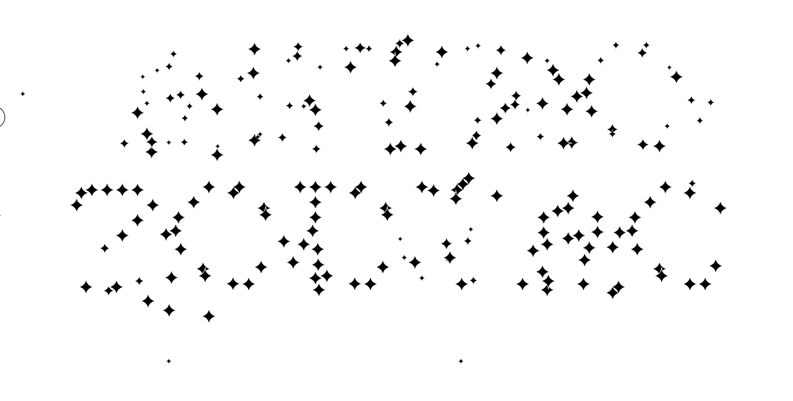
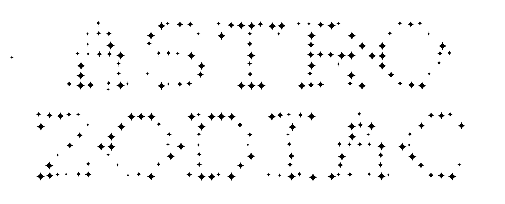

Astro
Typeface Design & Website
A starry web-based interactive typeface built with HTML, CSS, and Javascript for my Capstone Research: Form & Interaction course. We were asked to build a typeface with code that can change via user interaction and have at least two states.
I was intrigued by creating constantly changing states and experimented with parallax movement according to user mouse position. Through hovering the user can also create a sense of dimension within the typeface through changing the size of the modules.




